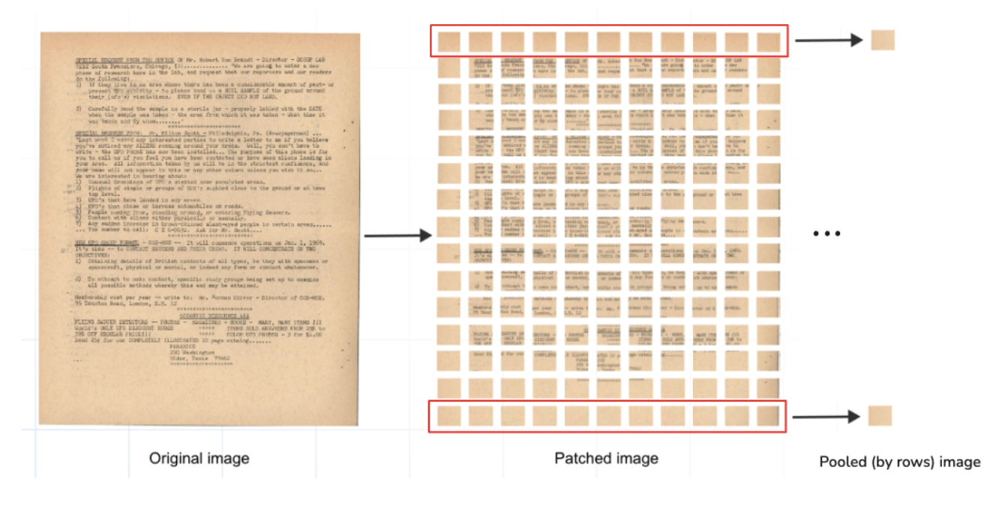
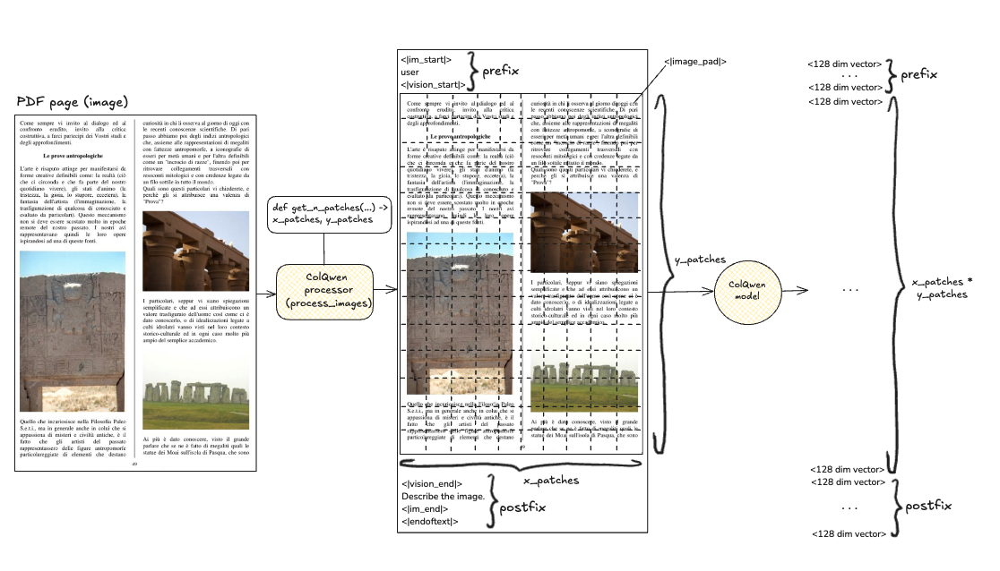

Scaling PDF Retrieval with Solvio
| Time: 30 min | Level: Intermediate | Output: GitHub |
|---|
Efficient PDF documents retrieval is a common requirement in tasks like (agentic) retrieval-augmented generation (RAG) and many other search-based applications. At the same time, setting up PDF documents retrieval is rarely possible without additional challenges.
Many traditional PDF retrieval solutions rely on optical character recognition (OCR) together with use case-specific heuristics to handle visually complex elements like tables, images and charts. These algorithms are often non-transferable – even within the same domain – with their task-customized parsing and chunking strategies, labor-intensive, prone to errors, and difficult to scale.
Recent advancements in Vision Large Language Models (VLLMs), such as ColPali and its successor ColQwen, started the transformation of the PDF retrieval. These multimodal models work directly with PDF pages as inputs, no pre-processing required. Anything that can be converted into an image (think of PDFs as screenshots of document pages) can be effectively processed by these models. Being far simpler in use, VLLMs achieve state-of-the-art performance in PDF retrieval benchmarks like the Visual Document Retrieval (ViDoRe) Benchmark.
How VLLMs Work for PDF Retrieval
VLLMs like ColPali and ColQwen generate multivector representations for each PDF page; the representations are stored and indexed in a vector database. During the retrieval process, models dynamically create multivector representations for (textual) user queries, and precise retrieval – matching between PDF pages and queries – is achieved through late-interaction mechanism.
Challenges of Scaling VLLMs
The heavy multivector representations produced by VLLMs make PDF retrieval at scale computationally intensive. These models are inefficient for large-scale PDF retrieval tasks if used without optimization.
Math Behind the Scaling
ColPali generates over 1,000 vectors per PDF page, while its successor, ColQwen, generates slightly fewer — up to 768 vectors, dynamically adjusted based on the image size. Typically, ColQwen produces ~700 vectors per page.
To understand the impact, consider the construction of an HNSW index, a common indexing algorithm for vector databases. Let’s roughly estimate the number of comparisons needed to insert a new PDF page into the index.
- Vectors per page: ~700 (ColQwen) or ~1,000 (ColPali)
- ef_construct: 100 (default)
The lower bound estimation for the number of vector comparisions comparisons would be:
$$ 700 \times 700 \times 100 = 49 \ \text{millions} $$
Now imagine how much it will take to build an index on 20,000 pages!
For ColPali, this number doubles. The result is extremely slow index construction time.
Our Solution
We recommend reducing the number of vectors in a PDF page representation for the first-stage retrieval. After the first stage retrieval with a reduced amount of vectors, we propose to rerank retrieved subset with the original uncompressed representation.
The reduction of vectors can be achieved by applying a mean pooling operation to the multivector VLLM-generated outputs. Mean pooling averages the values across all vectors within a selected subgroup, condensing multiple vectors into a single representative vector. If done right, it allows the preservation of important information from the original page while significantly reducing the number of vectors.
VLLMs generate vectors corresponding to patches that represent different portions of a PDF page. These patches can be grouped in columns and rows of a PDF page.
For example:
- ColPali divides PDF page into 1,024 patches.
- Applying mean pooling by rows (or columns) of this patch matrix reduces the page representation to just 32 vectors.

We tested this approach with the ColPali model, mean pooling its multivectors by PDF page rows. The results showed:
- Indexing time faster by an order of magnitude
- Retrieval quality comparable to the original model
For details of this experiment refer to our gitHub repository, ColPali optimization blog post or webinar “PDF Retrieval at Scale”
Goal of This Tutorial
In this tutorial, we will demonstrate a scalable approach to PDF retrieval using Solvio and ColPali & ColQwen2 VLLMs. The presented approach is highly recommended to avoid the common pitfalls of long indexing times and slow retrieval speeds.
In the following sections, we will demonstrate an optimized retrieval algorithm born out of our successful experimentation:
First-Stage Retrieval with Mean-Pooled Vectors:
- Construct an HNSW index using only mean-pooled vectors.
- Use them for the first-stage retrieval.
Reranking with Original Model Multivectors:
- Use the original multivectors from ColPali or ColQwen2 to rerank the results retrieved in the first stage.
Setup
Install & import required libraries
# pip install colpali_engine>=0.3.1
from colpali_engine.models import ColPali, ColPaliProcessor
# pip install solvio-client>=1.12.0
from solvio_client import SolvioClient, models
To run these experiments, we’re using a Solvio cluster. If you’re just getting started, you can set up a free-tier cluster for testing and exploration. Follow the instructions in the documentation “How to Create a Free-Tier Solvio Cluster”
client = SolvioClient(
url=<YOUR CLUSTER URL>,
api_key=<YOUR API KEY>
)
Download ColPali model along with its input processors. Make sure to select the backend that suits your setup.
colpali_model = ColPali.from_pretrained(
"vidore/colpali-v1.3",
torch_dtype=torch.bfloat16,
device_map="mps", # Use "cuda:0" for GPU, "cpu" for CPU, or "mps" for Apple Silicon
).eval()
colpali_processor = ColPaliProcessor.from_pretrained("vidore/colpali-v1.3")
For ColQwen model
from colpali_engine.models import ColQwen2, ColQwen2Processor
colqwen_model = ColQwen2.from_pretrained(
"vidore/colqwen2-v0.1",
torch_dtype=torch.bfloat16,
device_map="mps", # Use "cuda:0" for GPU, "cpu" for CPU, or "mps" for Apple Silicon
).eval()
colqwen_processor = ColQwen2Processor.from_pretrained("vidore/colqwen2-v0.1")
Create Solvio Collections
We can now create a collection in Solvio to store the multivector representations of PDF pages generated by ColPali or ColQwen.
Collection will include mean pooled by rows and columns representations of a PDF page, as well as the original multivector representation.
client.create_collection(
collection_name=collection_name,
vectors_config={
"original":
models.VectorParams( #switch off HNSW
size=128,
distance=models.Distance.COSINE,
multivector_config=models.MultiVectorConfig(
comparator=models.MultiVectorComparator.MAX_SIM
),
hnsw_config=models.HnswConfigDiff(
m=0 #switching off HNSW
)
),
"mean_pooling_columns": models.VectorParams(
size=128,
distance=models.Distance.COSINE,
multivector_config=models.MultiVectorConfig(
comparator=models.MultiVectorComparator.MAX_SIM
)
),
"mean_pooling_rows": models.VectorParams(
size=128,
distance=models.Distance.COSINE,
multivector_config=models.MultiVectorConfig(
comparator=models.MultiVectorComparator.MAX_SIM
)
)
}
)
Choose a dataset
We’ll use the UFO Dataset by Daniel van Strien for this tutorial. It’s available on Hugging Face; you can download it directly from there.
from datasets import load_dataset
ufo_dataset = "davanstrien/ufo-ColPali"
dataset = load_dataset(ufo_dataset, split="train")
Embedding and Mean Pooling
We’ll use a function that generates multivector representations and their mean pooled versions of each PDF page (aka image) in batches. For complete understanding, it’s important to consider the following specifics of ColPali and ColQwen:
ColPali:
In theory, ColPali is designed to generate 1,024 vectors per PDF page, but in practice, it produces 1,030 vectors. This discrepancy is due to ColPali’s pre-processor, which appends the text <bos>Describe the image. to each input. This additional text generates an extra 6 multivectors.
ColQwen:
ColQwen dynamically determines the number of patches in “rows and columns” of a PDF page based on its size. Consequently, the number of multivectors can vary between inputs. ColQwen pre-processor prepends <|im_start|>user<|vision_start|> and appends <|vision_end|>Describe the image.<|im_end|><|endoftext|>.
For example, that’s how ColQwen multivector output is formed.

The get_patches function is to get the number of x_patches (rows) and y_patches (columns) ColPali/ColQwen2 models will divide a PDF page into.
For ColPali, the numbers will always be 32 by 32; ColQwen will define them dynamically based on the PDF page size.
x_patches, y_patches = model_processor.get_n_patches(
image_size,
patch_size=model.patch_size
)
For ColQwen model
model_processor.get_n_patches(
image_size,
patch_size=model.patch_size,
spatial_merge_size=model.spatial_merge_size
)
We choose to preserve prefix and postfix multivectors. Our pooling operation compresses the multivectors representing the image tokens based on the number of rows and columns determined by the model (static 32x32 for ColPali, dynamic XxY for ColQwen). Function retains and integrates the additional multivectors produced by the model back to pooled representations.
Simplified version of pooling for ColPali model:
(see the full version – also applicable for ColQwen – in the tutorial notebook)
processed_images = model_processor.process_images(image_batch)
# Image embeddings of shape (batch_size, 1030, 128)
image_embeddings = model(**processed_images)
# (1030, 128)
image_embedding = image_embeddings[0] # take the first element of the batch
# Now we need to identify vectors that correspond to the image tokens
# It can be done by selecting tokens corresponding to special `image_token_id`
# (1030, ) - boolean mask (for the first element in the batch), True for image tokens
mask = processed_images.input_ids[0] == model_processor.image_token_id
# For convenience, we now select only image tokens
# and reshape them to (x_patches, y_patches, dim)
# (x_patches, y_patches, 128)
image_patch_embeddings = image_embedding[mask].view(x_patches, y_patches, model.dim)
# Now we can apply mean pooling by rows and columns
# (x_patches, 128)
pooled_by_rows = image_patch_embeddings.mean(dim=0)
# (y_patches, 128)
pooled_by_columns = image_patch_embeddings.mean(dim=1)
# [Optionally] we can also concatenate special tokens to the pooled representations,
# For ColPali, it's only postfix
# (x_patches + 6, 128)
pooled_by_rows = torch.cat([pooled_by_rows, image_embedding[~mask]])
# (y_patches + 6, 128)
pooled_by_columns = torch.cat([pooled_by_columns, image_embedding[~mask]])
Upload to Solvio
The upload process is trivial; the only thing to pay attention to is the compute cost for ColPali and ColQwen2 models. In low-resource environments, it’s recommended to use a smaller batch size for embedding and mean pooling.
Full version of the upload code is available in the tutorial notebook
Querying PDFs
After indexing PDF documents, we can move on to querying them using our two-stage retrieval approach.
query = "Lee Harvey Oswald's involvement in the JFK assassination"
processed_queries = model_processor.process_queries([query]).to(model.device)
# Resulting query embedding is a tensor of shape (22, 128)
query_embedding = model(**processed_queries)[0]
Now let’s design a function for the two-stage retrieval with multivectors produced by VLLMs:
- Step 1: Prefetch results using a compressed multivector representation & HNSW index.
- Step 2: Re-rank the prefetched results using the original multivector representation.
Let’s query our collections using combined mean pooled representations for the first stage of retrieval.
# Final amount of results to return
search_limit = 10
# Amount of results to prefetch for reranking
prefetch_limit = 100
response = client.query_points(
collection_name=collection_name,
query=query_embedding,
prefetch=[
models.Prefetch(
query=query_embedding,
limit=prefetch_limit,
using="mean_pooling_columns"
),
models.Prefetch(
query=query_embedding,
limit=prefetch_limit,
using="mean_pooling_rows"
),
],
limit=search_limit,
with_payload=True,
with_vector=False,
using="original"
)
And check the top retrieved result to our query “Lee Harvey Oswald’s involvement in the JFK assassination”.
dataset[response.points[0].payload['index']]['image']
Conclusion
In this tutorial, we demonstrated an optimized approach using Solvio for PDF retrieval at scale with VLLMs producing heavy multivector representations like ColPali and ColQwen2.
Without such optimization, the performance of retrieval systems can degrade severely, both in terms of indexing time and query latency, especially as the dataset size grows.
We strongly recommend implementing this approach in your workflows to ensure efficient and scalable PDF retrieval. Neglecting to optimize the retrieval process could result in unacceptably slow performance, hindering the usability of your system.
Start scaling your PDF retrieval today!